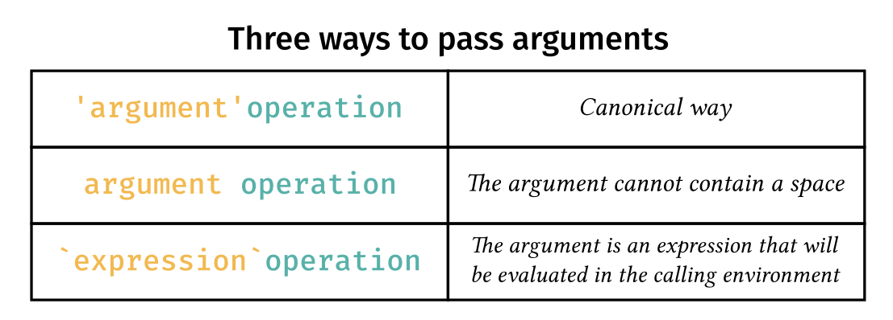

string_magic: Magical String
Interpolation
Laurent R. Bergé
2024-04-25
Source:vignettes/guide_string_magic.rmd
guide_string_magic.rmdString interpolation is a common feature of many programming
languages and is used to insert the value of variables directly into
character strings. This is useful to compose dynamic messages in a
natural way. For example "Hello {x}" will be interpolated
as “Hello John” if x = "John".
What if you want to apply some modifications to the variable before insertion? Like normalizing the case, trimming at 40 characters, or concatenating? In general, you can’t. Well, actually you can but have to use the language’s own native tools. And it can be surprising how performing a few basic operations can quickly amount to lot of typing.
The aim of the package stringmagic is to simplify and
empower string interpolation. With the string_magic
function, you can apply 50+ basic operations to interpolated variables,
interpolations can be nested, there is advanced support for
pluralization, and much more.
Basic interpolation
string_magic behaves in a similar way to the well known
function glue. Almost anything
glue can do, string_magic can do. Use curly
brackets to interpolate variables: i.e to insert their value directly in
the string:
library(stringmagic)
x = "John" ; y = "Mary"
string_magic("Hi {x}! How's {y} doing?")
#> [1] "Hi John! How's Mary doing?"You can either interpolate a variable that already exists, as above, or provide the variable as an argument:
string_magic("Hi {x}! How's {y} doing?", y = "Jane")
#> [1] "Hi John! How's Jane doing?"So far, so good. Now let’s come to string_magic’s
originality: the ability to add operations to interpolations.
How to add operations to interpolations
In string_magic you can apply any arbitrary chain of
operations to the interpolated variables. The syntax is as follows:

The operations are a comma separated sequence of
keywords, each keyword being bound to a specific function. Here is an
example in which we apply two operations:
lovers = c("romeo", "juliet")
string_magic("Famous lovers: {title, enum ? lovers}.")
#> [1] "Famous lovers: Romeo and Juliet."
As shown, title puts to title case and enum
creates an enumeration (i.e. turns the elements of a vector into a
single character string). These two operations are applied sequentially
from left to right to the variable lovers. You can stack as
many operations as you wish.
Here is a short list of common operations: enum to
enumerate; lower, upper and title
to change the case; unik to create the vector of unique
elements; n, N to format integers;
split to break the string with respect to a pattern;
replace to make pattern replacements; collapse
to concatenate the strings; first to select the first
elements; q, Q and bq for
quoting; align to align the elements.
The question mark defines the separation between the operations and the expression. After the question mark, you can use any valid R expression. For example:
string_magic("The max of each variable is: {enum ? sapply(iris[, 1:4], max)}.")
#> [1] "The max of each variable is: 7.9, 4.4, 6.9 and 2.5."Adding arguments to operations
Many operations use arguments. Arguments are passed using quoted text just before the operation. The syntax is:

Let’s take the example of splitting an email address and keeping the text before the domain:
email = "John@Doe.com"
string_magic("This message comes from {'@'split, first ? email}.")
#> [1] "This message comes from John."
In this example, split breaks
"John@Doe.com" with respect to "@", then
first keeps only the first element. Almost all operations
have default values. For split, the default value is a
single space. The operation first also accepts arguments
and its default is 1. Let’s change it to keep the first two values:
string_magic("The first two species are: {unik, '2'first, q, enum ? iris$Species}.")
#> [1] "The first two species are: 'setosa' and 'versicolor'."Alternative ways to pass arguments
There are three ways to pass arguments to operations: 
The first, canonical way, is using quotes like in the examples of the previous section.
The second way uses a space to separate the argument from the operation and hence forbids any space in the argument.
string_magic("The first five sepal lengths are: {5 first, enum ? iris$Sepal.Length}.")
#> [1] "The first five sepal lengths are: 5.1, 4.9, 4.7, 4.6 and 5."The third way uses backticks. Passing arguments with backticks requests an evaluation of the argument, using the variables defined in the calling environment. Let’s redo the previous example with argument evaluation:
n = 5
string_magic("The first {N?n} sepal lengths are: {`n`first, enum ? iris$Sepal.Length}.")
#> [1] "The first five sepal lengths are: 5.1, 4.9, 4.7, 4.6 and 5."Adding options to operations
Options are keywords working like flags (i.e. things that can be turned on) and change the behavior of the current operation. Many operations acccept options. Add options using a dot separated sequence of keywords attached to the operation:

We have seen the enum operation in an earlier example,
let’s add a couple of options to it.
fields = c("maths", "physics")
string_magic("This position requires a PhD in either: {enum.i.or ? fields}.")
#> [1] "This position requires a PhD in either: i) maths, or ii) physics."
As just seen, the option i triggers an enumeration with
roman lower case numbers, and option or finishes the
enumeration with an or instead of an and. The
order of the options does not matter. Note that there is partial
matching on the options, so that long option names can be shortened.
Let’s have another example where we wish to add upper cases but only
for the first letter of each sentence. To do this, we use the option
sentence of the operation upper:
oversight = "hey, you forgot. forgot what? forgot the capital letters!"
string_magic("{upper.sentence ? oversight}")
#> [1] "Hey, you forgot. Forgot what? Forgot the capital letters!"Wrapping up. With string_magic you can
perform string interpolations à la glue and also
empower these interpolations by adding operations on-the-fly (see the operations
reference). This can take us a long way already. We are presenting
next how you can nest interpolations and follow with an introduction to
pluralization.
Nesting interpolations
In string_magic, you have two types of interpolations:
regular interpolations (the ones we have covered so far), and verbatim
evaluation. The syntax of vertatim interpolations is as follows:

Anything after the exclamation mark is treated as verbatim: i.e. anything coming before the closing bracket is treated as a simple character string. Let’s give an example:
string_magic("Hello {upper ! world}.")
#> [1] "Hello WORLD."In that case, since world is placed after the
excalamation mark (and not a question mark!), the character string
"world" is passed to the operation upper,
leading to the result.
The main interest of verbatim evaluations is nesting. Indeed, the
function string_magic is always applied to the verbatim
character string before any operation is applied. This means
that interpolations within the verbatim text will be resolved. For
example, let’s create the sum from x1 to
x3:
string_magic("y = {' + 'collapse ! x{1:3}}")
#> [1] "y = x1 + x2 + x3"
Now let’s tackle a more challenging example: write a polynomial of
order n. It should be of the form
a + bx + cx^2 + etc.
n = 2
string_magic("poly({n}): {' + 'collapse ! {letters[1 + 0:n]}x^{0:n}}")
#> [1] "poly(2): ax^0 + bx^1 + cx^2"Let’s break it down. The verbatim expression (the one following the
exclamation mark), here "{letters[1 + 0:n]}x^{0:n}", is
evaluated with string_magic.
string_magic("{letters[1 + 0:n]}x^{0:n}") leads to the
vector c("ax^0", "bx^1", "cx^2").
The operation ' + 'collapse then concatenates that
vector with ' + '. This value is then appended to the
previous string.
We can refine by adding a cleaning operation in which we replace
"x^0" and "^1" by the empty string. Let’s do
it:
n = 4
string_magic("poly({n}): {' + 'c, 'f/x^0, ^1'clean ! {letters[1 + 0:n]}x^{0:n}}")
#> [1] "poly(4): a + bx + cx^2 + dx^3 + ex^4"To achieve our goal, we used the operation clean which
replaces comma separated regular expression patterns (of the form
'flags/pat1, pat2, etc') with the empty string. We also
used the flag f (standing for ‘fixed’) to suppress the
regular expression meaning of the patterns (because '^' has
a specific meaning in regexes) – see the vignette
on flags for more information. Finally, you can notice that the
operation collapse has a single letter alias.
Pluralization: A brief introduction
Pluralization is about the automatic writing of a message in singular
or plural form, depending on context. This feature is especially
important for developers who often need to write human readable messages
to inform the user. string_magic has an extensive support
for pluralization, which we briefly introduce here.
The syntax for pluralization is as follows:

After the opening bracket, to trigger pluralization use an hashtag
(#) or a dollar sign ($) followed by plural
operations. There is two kinds of pluralization: either on the value of
the expresison (the #), either on its length (the
$). Here is an example of pluralization on length with
three operations:
friends = c("Piglet", "Eeyore")
string_magic("My best friend{$s, are, enum ? friends}. Who am I?")
#> [1] "My best friends are Piglet and Eeyore. Who am I?"
friends = "Mercutio"
string_magic("My best friend{$s, are, enum ? friends}. Who am I?")
#> [1] "My best friend is Mercutio. Who am I?"As you can see, the name of the operations is intuitive:
s to add an “s” when plural, are to write
is when singular and are when plural (the
operation is is identical), and enum to create
an enumeration.
Note that in plural interpolations the expression over which to pluralize is optional. It is automaically deduced from the previous interpolations. Now let’s illustrate this behavior with a pluralization on value:
nFiles = 6
string_magic("Warning: {N?nFiles} file{#s, is} corrupted.")
#> [1] "Warning: six files are corrupted."
nFiles = 1
string_magic("Warning: {N?nFiles} file{#s, is} corrupted.")
#> [1] "Warning: one file is corrupted."The first interpolation is a regular one. The second one,
{#s, is}, deduces the expression over which to pluralize
from this previous interpolation.
This was only an introduction. To have more information on pluralization, please see the dedicated section.
Escaping and special cases
We end this introduction with a few special cases.
Escape brackets
The opening and closing brakets, {}, are special
characters and cannot be used as regular text. To bypass their special
meaning, you need to escape them with a double backslash.
You only need to escape the special delimiters which the algorithm is currently looking for. For example, if we escape the opening delimiter, we don’t need to escape the closing one:
# Here opening delimiter is escaped: the closing delimiter has no special meaning
string_magic("open = \\{, close = }")
#> [1] "open = {, close = }"You need to escape the closing delimiter only when the algorithm is looking for it. In the following example, we need to escape the closing curly bracket to treat it as a regular character:
string_magic("Here are closing brackets: {5 times.c ! \\}}")
#> [1] "Here are closing brackets: }}}}}"Alternatively, use the argument .delim to change the
delimiters:
string_magic("Here I {interpolate} with .[this] ", .delim = ".[ ]", this = ".[]")
#> [1] "Here I {interpolate} with .[] "When using delimiters composed of two or more characters, like in the previous example, to escape it you need to add a double backslash before the first character (i.e. right before the delimiter):
string_magic("Here I {interpolate} with \\.[] ", .delim = ".[ ]")
#> [1] "Here I {interpolate} with .[] "
# another example with {{ }} as delimiter
string_magic("I {{what}} with \\{{ }} ", .delim = "{{ }}", what = "interpolate")
#> [1] "I interpolate with {{ }} "Another way is to pass a character string in an expression. Indeed,
since {expr} evaluates expr, if
expr is a character string, it will stay untouched.
string_magic("I {'can {write} {{what}} I want'}")
#> [1] "I can {write} {{what}} I want"Other escapes
In the few operations expecting a semi-colon (if-else and certain operations in pluralization), it can also be escaped with a double backslash.
# if-else statement with semi-colon
is_c = TRUE
string_magic("{&is_c ; int i = 1\\; ; i = 1}")
#> [1] "int i = 1;"
is_c = FALSE
string_magic("{&is_c ; int i = 1\\; ; i = 1}")
#> [1] "i = 1"How to use a regular ! in interpolations?
In interpolations, the exclamation mark (!) signals a
verbatim expression. But what if you use it to mean the logical
operation not in an operation-free interpolation? In that case,
you need a hack: use a question mark (?) first to indicate
to the algorithm that you want to evaluate the expression.
Ex.4: using the ? hack to use ! as a
logical operation.
string_magic("{!TRUE} is {?!TRUE}")
#> [1] "TRUE is FALSE"